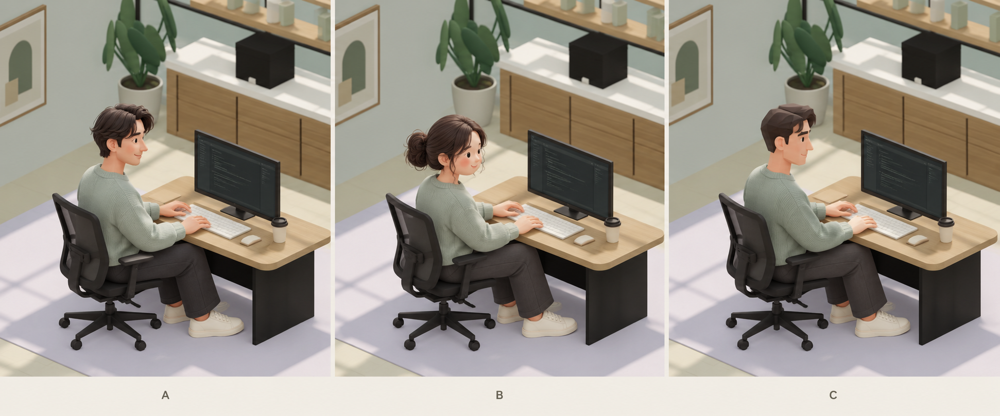

같은 사무실, 다른 직원 디자인
오피스로 돌아가기 ↗공간·가구·옷은 같은 조건으로 두고, 책상에 앉은 사람의 비율과 표현만 비교하는 시안입니다.

이미지로 만든 디자인 검토용 시안입니다. 실제 3D 모델이나 실행 화면이 아니며, 현재 오피스와 업무 연결 기능은 변경하지 않았습니다.
모바일에서는 비교 이미지를 가로로 밀어서 볼 수 있어요.
공간·가구·옷은 같은 조건으로 두고, 책상에 앉은 사람의 비율과 표현만 비교하는 시안입니다.

이미지로 만든 디자인 검토용 시안입니다. 실제 3D 모델이나 실행 화면이 아니며, 현재 오피스와 업무 연결 기능은 변경하지 않았습니다.
모바일에서는 비교 이미지를 가로로 밀어서 볼 수 있어요.